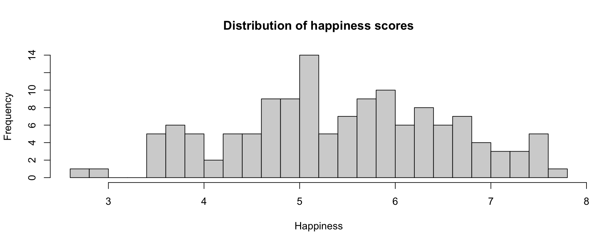
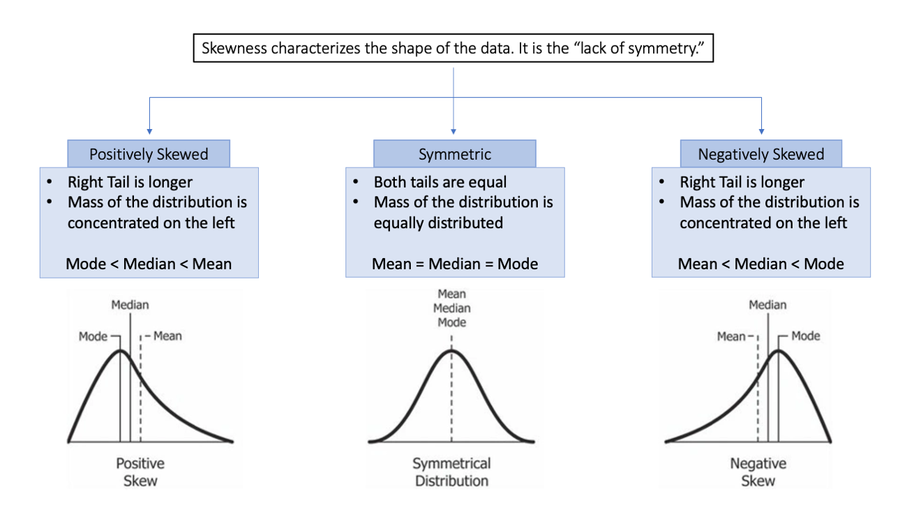
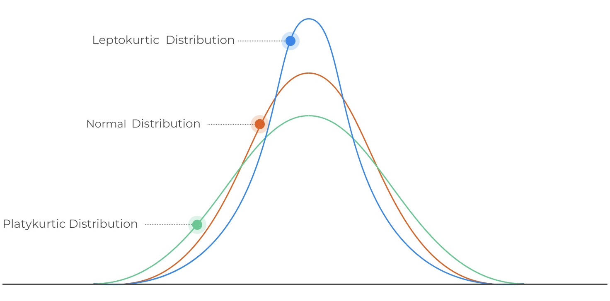

Understand the basic principles that underlie the type of statistical models that are widely used in Cognitive Science
Learn how to select, implement, and interpret these statistical models
Communicate the results of statistical analyses (through text and visualization)
Incorporate best practices for open and reproducible research
Prepare you to both understand statistical analyses in the research you read and produce statistical analyses yourselves
Create situations in which you can practice these skills that will help you throughout your career
Challenge you to learn new things in a supportive environment
Work together with you to make this a high-quality learning experience
Give everyone an A
You tell me!
Factors to consider:
Lab sessions (that will prepare you for the homework) are on Thursdays.
Homework is due on Tuesdays.
It seems like Friday or Monday would be optimal, but I know that folks might not be on campus.
I can hold office hours in person and/or virtually on Mondays or virtually (only) on Fridays.
For the rest of today:
Find errors in data entry or collection
Understand your data
Explore descriptive research questions
Overall, there’s a lot to learn from descriptive statistics.
Examples today are based on data from the 2015 World Happiness Report, which is an annual survey part of the Gallup World Poll.
A distribution is a description of the [relative] number of times a variable X will take each of its unique values.
If I know nothing about a participant in this survey, but I had to guess their Happiness rating, what would be the best number to guess?
If I know nothing about a participant in this survey, but I had to guess their Happiness rating, what would be the best number to guess?
The Mean!
The mean is the average. The population mean is represented by the Greek symbol \(\mu\).
Example: a set of numbers is: 7, 5, 8, 4, 9, 3.
For a vector \(x\) with length \(N\), the mean \((\mu)\) of \(x\) is:
\[\mu = \frac{\Sigma(x_i)}{N}=\frac{7+5+8+4+9+3}{6}=\frac{36}{6}=6\]
Example: a set of numbers is: 7, 5, 8, 4, 9, 3. The mean of these numbers is 6.
The mean can take a value not found in the dataset.
Fulcrum of the data
Example: a set of numbers is: 7, 5, 8, 4, 9, 3. The mean of these numbers is 6.
The mean can take a value not found in the dataset.
Fulcrum of the data
The mean is strongly influenced by outliers.
Deviations from the mean sum to 0
It’s important to remember that the mean of a population (or group) may not represent well some (or any) members of the population.
Example: André-François Raffray and the French apartment
The Mean only one measure of central tendency
Median – the middle point of the data
7, 10, 8, 3, 9, 3, 12, the median number is 8.Mode – the number that most commonly occurs in the distribution.
Distributions are most often described by their mean and variance.
Typically, these two parameters are used in common inferential techniques.
The mean represents the average score in a distribution. A good measure of spread will tell us something about how the typical score deviates from the mean.
Why can’t we use the average deviation?
Our solution is to square deviations.
[1] 6[1] 1 -1 2 -2 3 -3[1] 1 1 4 4 9 9[1] 28The sum of squared deviations is referred to as the Sum of Squares (SS).
We calculate the average squared deviation: this is our variance, \(\sigma^2\):
Standard deviation \(\sigma\) is the square root of the variance.
The standard deviation is more interpretable than the variance. It can be thought of as the average distance of scores from the mean.
Skewness characterizes symmetry of a distribution.
world %>% ggplot(aes(x = Happiness)) +
geom_histogram(fill = "gray") +
geom_vline(aes(xintercept = mean(Happiness))) +
geom_vline(aes(xintercept = median(Happiness))) +
geom_label(aes(x = mean(Happiness), y = maxFreq(Happiness)),
label = "mean") +
geom_label(aes(x = median(Happiness), y = maxFreq(Happiness)*2),
label = "median") +
labs(y = "Frequency") +
theme_bw()In a normal distribution, the mean, median, and mode are all relatively equal.
world %>% ggplot(aes(x = Corruption)) +
geom_histogram(fill = "gray") +
geom_vline(aes(xintercept = mean(Corruption, na.rm=T))) +
geom_vline(aes(xintercept = median(Corruption, na.rm=T))) +
geom_label(aes(x = mean(Corruption, na.rm=T), y = maxFreq(Corruption)), label = "mean") +
geom_label(aes(x = median(Corruption, na.rm=T), y = maxFreq(Corruption)*2), label = "median") +
labs(y = "Frequency") +
theme_bw()In a skewed distribution, both the mean and median get pulled away from the mode. The mean is pulled further.
Kurtosis characterizes tail-heaviness of a distribution.
